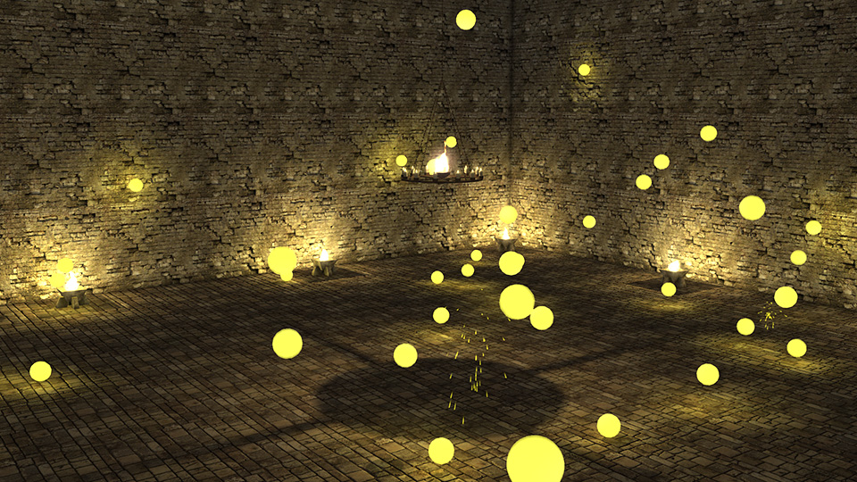

Simple Games: Difference between revisions
Eric Lengyel (talk | contribs) (Created page with "__NOTOC__ The C4 Engine ships with two basic game projects called <code>SimpleBall</code> and <code>SimpleChar</code>. Both are made up of two files that are heavily commented and represent nearly the minimum amount of code that needs to be written to have a working game module. You can tell the engine to load one of these game module by editing the file <code>Data/Engine/game.cfg</code> and changing the value of the variable <code>gameModuleName</code> to either <code>...") |
Eric Lengyel (talk | contribs) No edit summary |
||
| Line 10: | Line 10: | ||
When the SimpleBall module starts, it displays a small dialog box. Click the '''Start''' button to load a world that demonstrates the basic functionality implemented in the game. The "SimpleBall" world contains dozens of yellow bouncing balls in a room, as shown in Figure 1, and every ball can collide with the environment or any other ball. The motion of the balls is controlled by the physics system, and the SimpleBall code responds to collisions by generating some sparks as a small particle system. | When the SimpleBall module starts, it displays a small dialog box. Click the '''Start''' button to load a world that demonstrates the basic functionality implemented in the game. The "SimpleBall" world contains dozens of yellow bouncing balls in a room, as shown in Figure 1, and every ball can collide with the environment or any other ball. The motion of the balls is controlled by the physics system, and the SimpleBall code responds to collisions by generating some sparks as a small particle system. | ||
* [[SimpleBall Source Code]] | |||
== SimpleChar == | == SimpleChar == | ||
| Line 22: | Line 24: | ||
Note that many of the physical objects in various worlds will not work as they do in the demo game because they use special controllers that are not defined in the SimpleChar game. It is not a bug if you can walk through a crate in SimpleChar when that crate could be broken by the axe in the demo game, for example. | Note that many of the physical objects in various worlds will not work as they do in the demo game because they use special controllers that are not defined in the SimpleChar game. It is not a bug if you can walk through a crate in SimpleChar when that crate could be broken by the axe in the demo game, for example. | ||
* [[SimpleChar Source Code]] | |||
[[Category:Tutorials]] | [[Category:Tutorials]] | ||
Latest revision as of 21:29, 12 September 2023
The C4 Engine ships with two basic game projects called SimpleBall and SimpleChar. Both are made up of two files that are heavily commented and represent nearly the minimum amount of code that needs to be written to have a working game module.
You can tell the engine to load one of these game module by editing the file Data/Engine/game.cfg and changing the value of the variable gameModuleName to either "SimpleBall" or "SimpleChar". To return to the large demo game, change gameModuleName back to "The31st".
SimpleBall
{kind=link}

The SimpleBall game demonstrates a basic rigid body controller and particle system implementation. It also has controls for moving a spectator camera and registering a model type, controller type, and locator type.
When the SimpleBall module starts, it displays a small dialog box. Click the Start button to load a world that demonstrates the basic functionality implemented in the game. The "SimpleBall" world contains dozens of yellow bouncing balls in a room, as shown in Figure 1, and every ball can collide with the environment or any other ball. The motion of the balls is controlled by the physics system, and the SimpleBall code responds to collisions by generating some sparks as a small particle system.
SimpleChar
The SimpleChar game demonstrates a basic character controller and third-person chase camera. The character is able to perform basic interactions with the environment.
To load a level after starting SimpleChar, you'll need to open the Command Console with the tilde key then use the load command. For example, type load world/Teleport to load the Tutorials/world/Teleport.wld world.) The SimpleChar tutorial does not have any user interface, and the gray screen shown at start-up is normal. To quit this game, use one of the methods described in Quick Tour.
When the SimpleChar module is running, you will be able to run the soldier model around the world using the WSAD keys and the mouse. If the movement keys don't seem to work, make sure the strip at the bottom of the screen is not visible by pressing the Escape key.
If the character is close enough to an interactive object such as gate that can be opened or a level that can be pulled, pointing toward the object and clicking the mouse will activate the controller attached to it.
Note that many of the physical objects in various worlds will not work as they do in the demo game because they use special controllers that are not defined in the SimpleChar game. It is not a bug if you can walk through a crate in SimpleChar when that crate could be broken by the axe in the demo game, for example.